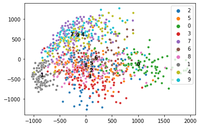
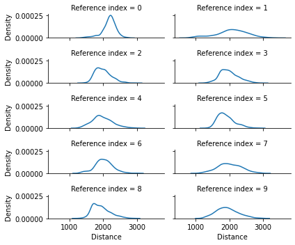
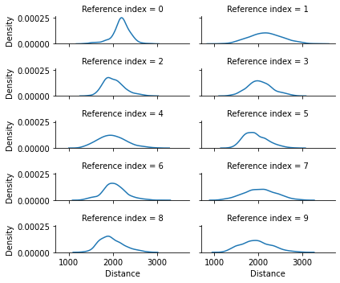
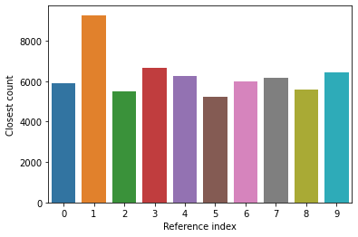

[1]:
import os
import pickle as pkl
import numpy as np
import pandas as pd
import seaborn as sns
import matplotlib.pyplot as plt
from sklearn.cluster import KMeans
from sklearn.datasets import fetch_openml
from sklearn.decomposition import PCA
from sklearn.manifold import TSNE
from sklearn.metrics.pairwise import cosine_distances, euclidean_distances
from sklearn.model_selection import train_test_split
np.set_printoptions(suppress=True)
[2]:
if os.path.exists("mnist_784_X_y.pkl"):
X, y = pkl.load(open("mnist_784_X_y.pkl", 'rb'))
else:
X, y = fetch_openml("mnist_784", version=1, return_X_y=True, as_frame=False)
X_train, X_test, y_train, y_test = train_test_split(X, y, test_size=0.1)
[3]:
X_test_reversed = np.flip(X_test, axis=1)
X_test_sorted = np.sort(X_test, axis=1)
X_test_normalized = X_test / 255.0
X_test_clipped = np.clip(X_test, a_min=0, a_max=200)
X_test_shift_no_1s = X_test[y_test!="1", :]
y_test_shift_no_1s = y_test[y_test!="1"]
X_test_shift_no_9s = X_test[y_test!="9", :]
y_test_shift_no_9s = y_test[y_test!="9"]
The centroid references always matched the label, but the counts of closest references did not match. Consider label 9 in our PCA. Very nearby are the centroids for 7 and 4. So in the cases
[4]:
class ReferenceSelector:
def __init__(self):
self.n_references = 0
self.ref_labels = None
def calculate_references(self, X: np.array, y: np.array):
raise NotImplementedError()
[5]:
class PCACentroids(ReferenceSelector):
def __init__(self, n_components=2, lower_percentile_limit=0, upper_percentile_limit=0):
super().__init__()
self.n_components = n_components
self.lower_percentile_limit = lower_percentile_limit
self.upper_percentile_limit = upper_percentile_limit
def calculate_references(self, X: np.array, y: np.array):
# Fit PCA
pca = PCA(n_components=self.n_components)
X_pca = pca.fit_transform(X)
# Find centroids for each label in PCA space
n_labels = np.unique(y).shape[0]
refs = [None] * n_labels
labels = sorted(np.unique(y))
self.n_references = len(labels)
self.ref_labels = labels
for i, label in enumerate(labels):
filtered_X_pca = X_pca[y==label]
if self.lower_percentile_limit != 0 or self.upper_percentile_limit != 0:
lp = np.percentile(filtered_X_pca, self.lower_percentile_limit)
up = np.percentile(filtered_X_pca, self.upper_percentile_limit)
filtered_X_pca = filtered_X_pca[(lp < filtered_X_pca) & (filtered_X_pca < up)]
refs[i] = filtered_X_pca.mean(axis=0)
refs = np.array(refs)
# Convert centroids back to raw space
raw_refs = pca.inverse_transform(refs)
return raw_refs
[6]:
class PCAKMeans(ReferenceSelector):
def __init__(self, n_clusters=8, n_components=2, kmeans_kwargs={}):
super().__init__()
self.n_clusters = n_clusters
self.n_components = n_components
self.kmeans_kwargs = kmeans_kwargs
def calculate_references(self, X: np.array, y: np.array):
self.n_references = self.n_clusters
self.ref_labels = list(range(self.n_clusters))
# Fit PCA first
pca = PCA(n_components=self.n_components)
X_pca = pca.fit_transform(X)
# Find k-means clusters
kmeans = KMeans(n_clusters=self.n_clusters, **self.kmeans_kwargs)
kmeans.fit(X_pca)
refs = kmeans.cluster_centers_
# Convert centroids back to raw space
raw_refs = pca.inverse_transform(refs)
return raw_refs
[7]:
class EmbeddingsAnalysis:
distance_fns = {'euclidean': euclidean_distances, 'cosine': cosine_distances}
def __init__(self, X, y=None,
distance='cosine',
reference_selector: ReferenceSelector = PCACentroids(n_components=2)):
if distance not in EmbeddingsAnalysis.distance_fns:
raise ValueError(f"Distance not valid. Choose one of {list(EmbeddingsAnalysis.distance_fns.keys())}.")
self.X = X
self.y = y
self.labels = sorted(np.unique(y))
self.distance_method = EmbeddingsAnalysis.distance_fns[distance]
self.plot_pca = None
self.X_plot_pca = None
self.refs_plot_pca = None
self.X_ref_dists = None
self.X_ref_closest = None
print("Calculating references...", end=" ")
self.refs = reference_selector.calculate_references(X, y)
self.n_references = reference_selector.n_references
self.ref_labels = reference_selector.ref_labels
print("Done.")
print("Calculating distances from data points to references...", end=" ")
self.X_ref_dists = self.distance_method(self.X, self.refs)
print("Done.")
print("Finding closest reference for each data point...", end=" ")
self.X_ref_closest = np.argmin(self.X_ref_dists, axis=1)
print("Done.")
def plot(self, X = None, y = None, n: int = 1000, show_references: bool = True, method: str = 'pca'):
if self.X_plot_pca is None:
print("Fitting PCA to data for plot for all data...", end=" ")
# Fit PCA
self.plot_pca = PCA(n_components=2)
self.X_plot_pca = self.plot_pca.fit_transform(self.X)
print("Done.")
X_plot = self.X_plot_pca if X is None else self.plot_pca.transform(X)
y_plot = self.y if y is None else y
fig, ax = plt.subplots()
if y_plot is not None:
sns.scatterplot(x=X_plot[:n, 0], y=X_plot[:n, 1], hue=y_plot[:n], s=20, ax=ax)
else:
sns.scatterplot(x=X_plot[:n, 0], y=X_plot[:n, 1], s=20, ax=ax)
if show_references and self.refs is not None:
if self.refs_plot_pca is None:
self.refs_plot_pca = self.plot_pca.transform(self.refs)
sns.scatterplot(x=self.refs_plot_pca[:, 0], y=self.refs_plot_pca[:, 1], color="black", marker="X", s=0, ax=ax)
# centroid labels
for i, ref_label in enumerate(self.ref_labels):
plt.text(x=self.refs_plot_pca[i, 0], y=self.refs_plot_pca[i, 1], s=str(i), horizontalalignment='center',
color='black', weight='bold')
def plot_reference_distances(self, X = None, n: int = 1000):
X_plot = self.X_ref_dists if X is None else self.distance_method(X, self.refs)
return sns.displot(data=pd.melt(pd.DataFrame(X_plot[:n]), var_name="Reference index", value_name="Distance"),
x="Distance", col="Reference index", col_wrap=2, kind='kde', height=1, aspect=3)
def plot_closest_references_by_label(self, X = None, y = None, n: int = None):
X_plot = self.X_ref_closest if X is None else np.argmin(self.distance_method(X, self.refs), axis=1)
y_plot = self.y if X is None else y
if n is None:
n = len(X_plot)
closest_ref_count_by_label = []
for label in self.labels:
closest_ref_count_by_label.append(np.bincount(X_plot[:n][y_plot[:n]==label],
minlength=self.n_references))
closest_ref_count_by_label = np.array(closest_ref_count_by_label)
return sns.heatmap(closest_ref_count_by_label, annot=True, fmt=".0f", linewidth=1, linecolor='w').set(xlabel="Closest reference", ylabel="True label")
def plot_closest_references(self, X = None, y = None, n: int = None):
X_plot = self.X_ref_closest if X is None else np.argmin(self.distance_method(X, self.refs), axis=1)
y_plot = self.y if X is None else y
if n is None:
n = len(X_plot)
closest_ref_count = np.bincount(X_plot[:n], minlength=self.n_references)
return sns.barplot(x=list(range(self.n_references)), y=closest_ref_count
).set(xlabel="Reference index", ylabel="Closest count")
[8]:
b = EmbeddingsAnalysis(X_train, y_train, distance='euclidean', reference_selector=PCACentroids(n_components=20))
print(b.labels)
print(b.refs.shape)
Calculating references... Done.
Calculating distances from data points to references... Done.
Finding closest reference for each data point... Done.
['0', '1', '2', '3', '4', '5', '6', '7', '8', '9']
(10, 784)
Install whylogs#
While the embeddings stuff hangs out on a branch, we need to upload the wheel or create a dev release.
[10]:
%pip install -q ./whylogs-1.1.21-py3-none-any.whl[embeddings,whylabs]
━━━━━━━━━━━━━━━━━━━━━━━━━━━━━━━━━━━━━━━ 548.0/548.0 KB 9.9 MB/s eta 0:00:00
━━━━━━━━━━━━━━━━━━━━━━━━━━━━━━━━━━━━━━━━ 62.8/62.8 KB 4.6 MB/s eta 0:00:00
━━━━━━━━━━━━━━━━━━━━━━━━━━━━━━━━━━━━━━ 340.4/340.4 KB 20.4 MB/s eta 0:00:00
━━━━━━━━━━━━━━━━━━━━━━━━━━━━━━━━━━━━━━ 140.6/140.6 KB 11.6 MB/s eta 0:00:00
Embedding Logging#
Here I use the EmbeddingsAnalysis to compute the reference matrix and labels. Just plug them into the EmbeddingConfig and use a DeclarativeSchema to give us an EmbeddingMetric for out logged data. Let’s log the MNIST training data.
[11]:
import whylogs as why
from whylogs.core.resolvers import MetricSpec, ResolverSpec
from whylogs.core.schema import DeclarativeSchema
from whylogs.experimental.core.metrics.embedding_metric import (
DistanceFunction,
EmbeddingConfig,
EmbeddingMetric,
)
config = EmbeddingConfig(
references=b.refs,
labels=b.labels,
distance_fn=DistanceFunction.euclidean,
)
schema = DeclarativeSchema([ResolverSpec(column_name="digits", metrics=[MetricSpec(EmbeddingMetric, config)])])
profile = why.log(row={"digits": X_test}, schema=schema)
view = profile.view()
column = view.get_column("digits")
summary = column.to_summary_dict()
for digit in [str(i) for i in range(10)]:
mean = summary[f'embedding/{digit}_distance:distribution/mean']
stddev = summary[f'embedding/{digit}_distance:distribution/stddev']
print(f"{digit} distance: mean {mean} stddev {stddev}")
0 distance: mean 2187.141655801724 stddev 203.77334471283987
1 distance: mean 2059.8602212668993 stddev 469.4735831642491
2 distance: mean 1992.0445862874203 stddev 229.22836662674615
3 distance: mean 1995.4869736463306 stddev 273.2394062165652
4 distance: mean 1975.553989765833 stddev 301.63881642563325
5 distance: mean 1909.8737682353667 stddev 251.25025999164887
6 distance: mean 2022.1356935316103 stddev 255.4575357111235
7 distance: mean 2012.5709735416726 stddev 344.84768332262973
8 distance: mean 1937.1825351038522 stddev 260.35992799701245
9 distance: mean 1941.724570368499 stddev 327.42018587916505
Send to WhyLabs#
[ ]:
import getpass
from datetime import datetime
from whylogs.api.writer.whylabs import WhyLabsWriter
# set your org-id here - should be something like "org-xxxx"
os.environ["WHYLABS_DEFAULT_ORG_ID"] = "org-XXXX"
# set your datased_id (or model_id) here - should be something like "model-X"
os.environ["WHYLABS_DEFAULT_DATASET_ID"] = "model-X"
# set your API key here
print("Enter your WhyLabs API key")
os.environ["WHYLABS_API_KEY"] = getpass.getpass()
print("Using API Key ID: ", os.environ["WHYLABS_API_KEY"][0:10])
#profile.set_dataset_timestamp(datetime.now())
#view = profile.view()
writer = WhyLabsWriter()
writer.write(view)
Enter your WhyLabs API key
··········
Using API Key ID: TDyfGTv9Nt
<ipython-input-13-c1cbbee22a68>:22: DeprecationWarning: `profile` is deprecated as an argument to `write`; use `file` instead.
writer.write(profile=view)
(True, '')
[ ]:
b.plot()
Fitting PCA to data for plot for all data... Done.

[ ]:
b.plot(X=X_test_shift_no_1s, y=y_test_shift_no_1s)

[ ]:
b.plot_reference_distances()
<seaborn.axisgrid.FacetGrid at 0x7fcf111aad30>

[ ]:
b.plot_reference_distances(X=X_test_shift_no_1s)
<seaborn.axisgrid.FacetGrid at 0x7fcf10f794c0>

[ ]:
b.plot_closest_references()
[Text(0, 0.5, 'Closest count'), Text(0.5, 0, 'Reference index')]

[ ]:
b.plot_closest_references(X=X_test_shift_no_1s, y=y_test_shift_no_1s)
[ ]:
b.plot_closest_references_by_label()
[ ]:
{|"bel(X=X_test_shift_no_1s, y=y_test_shift_no_1s)
[ ]:
a = EmbeddingsAnalysis(X, y, reference_selector=PCACentroids(n_components=20))
[ ]:
a.plot()
[ ]:
a.plot_closest_references_by_label()
[ ]:
a.plot_reference_distances()
[ ]:
np.flip(np.array([[1, 2, 3, 4], [5, 6, 7, 8]]), axis=1)
[ ]:
np.array([[1, 2, 3, 4], [5, 6, 7, 8]]).shape
[ ]:
EmbeddingsAnalysis.distance_fns["euclidean"](X_test_shift_no_9s, X_test[:5, :])
[ ]:
EmbeddingsAnalysis.distance_fns["euclidean"](X_test, X_test[:5, :])
[ ]: